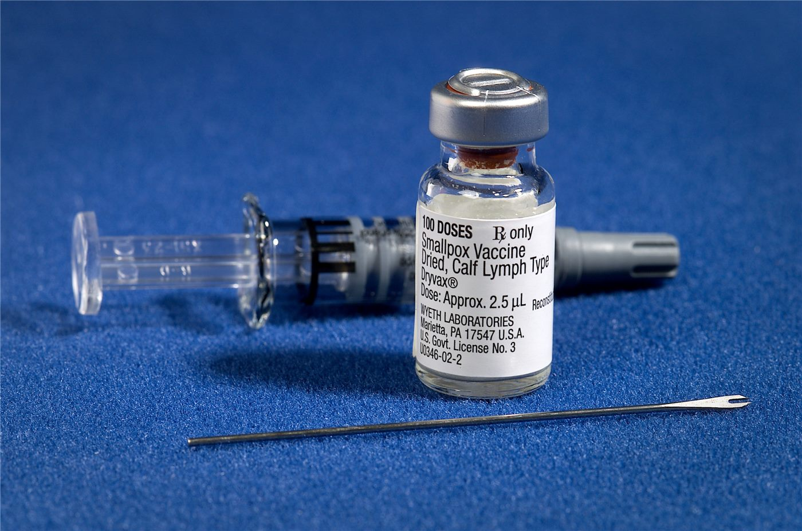

인천화교협회, 60세 이상 외국인 대상포진 무료 예방접종 안내
인천화교협회가 60세 이상 외국인을 대상으로 하는 대상포진 무료 예방접종 안내를 게시했다. 고령 화교 주민에게 실질적인 보건 지원이 되는 사업이다.
유선경 기자 · 2026.09.03
橋화인소식

인천화교협회가 만 60세 이상 외국인을 대상으로 한 대상포진 무료 예방접종 안내를 협회 게시판에 올렸다.
광고 문의 · 300×250대상포진은 어릴 때 수두를 앓은 뒤 몸에 남아 있던 바이러스가 면역력이 떨어질 때 다시 활성화되면서 생기는 질환이다. 발진과 함께 통증이 심하고, 회복 후에도 신경통이 오래 남는 경우가 있다.
고령층에서 발생률과 합병증 위험이 높아, 각국에서 60세 전후를 기준으로 예방접종을 권고한다. 접종은 발병 자체를 완전히 막지는 못해도 중증도와 후유 신경통 위험을 낮추는 것으로 알려져 있다.
이번 안내가 갖는 의미는 대상에 외국인이 명시됐다는 점이다. 국내 예방접종 사업 가운데 일부는 주민등록을 기준으로 운영돼 외국인 등록자가 대상에서 빠지는 경우가 있었다.
신청 시에는 외국인등록증과 나이 확인이 필요한 것이 통상이며, 지정 의료기관에서 접종이 이뤄지는 방식이 일반적이다. 구체적 절차는 협회 안내문에 따른다.
만성질환이 있거나 면역억제 치료를 받는 경우에는 접종 가능 여부를 의료진과 상의해야 한다. 백신 종류에 따라 금기 사항이 다르기 때문이다.
협회를 통한 보건 안내는 언어 장벽을 낮추는 기능을 한다. 한국어 공고문만으로는 접근이 어려운 고령 화교 주민에게 협회의 중문 안내는 실질적인 통로가 된다.
출처·참고 (사실 확인용 — 본문은 직접 재작성)
· http://www.ichinese.kr/
· http://www.ichinese.kr/